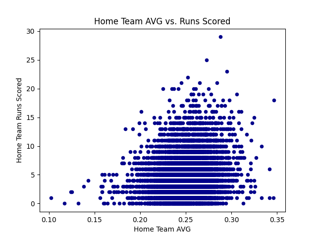
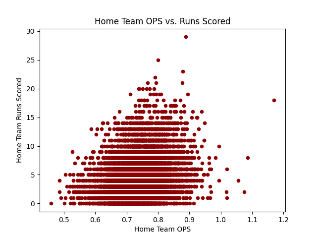
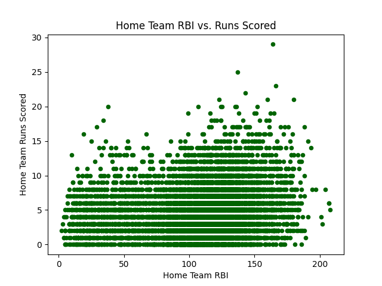

Some Baseball Data Analysis
I recently collected team-level data from the MLB API on almost all The data was originally intended for AI training, so I filtered out any games with missing data. In total, the dataset contains 12,778 games, or about 98% of all games played during the period. Major League Baseball games played from 2016 to 2021. For each game, I collected the following information:
- The number of runs scored by each team.
- Average hitting, pitching, and fielding statistics for each team over the previous 30 days.
This amounts to 195 features for each game. The dataset can be found here: data.csv. The main project, which defines the underlying data structures and allows you to gather data for other seasons, can be found here: rockysnow7/baseball. Below are a few interesting findings from its analysis.
Home Field Advantage
| Season | Mean Runs per Game (Home Team) | Mean Runs per Game (Away Team) | Difference |
|---|---|---|---|
| 2016 | 4.552 | 4.407 | 0.144 |
| 2017 | 4.768 | 4.537 | 0.231 |
| 2018 | 4.514 | 4.367 | 0.148 |
| 2019 | 4.813 | 4.860 | –0.048 |
| 2020 | 4.719 | 4.566 | 0.152 |
| 2021 | 4.619 | 4.466 | 0.154 |
The above table shows the mean number of runs scored per game by home and away teams in each season from 2016 to 2021. The Difference column shows \(MeanHomeTeamRuns - MeanAwayTeamRuns\), allowing us to quantify home field advantage in terms of runs scored. This verifies that indeed, on average, home teams score more runs than their competitors – this was most pronounced in 2017, though still quite modest.
More interesting is that in 2019, away teams scored more runs on average than home teams. This is even still the case when outliers are removed (like the Giants’ 19-2 win over the Rockies on July 15, 2019, and the 50 other outlier games of 2019). I do not know the reason for this anomaly; 2019 saw speculation of a “juiced ball” leading to more home runs, which certainly would have affected the game, but surely not disproportionately in favor of either team. It is also possible that the data is incorrect, but I am confident this is not the case.
However, the 2019 share of wins between home and away teams was still consistent with other seasons, as shown below.
| Season | Home Team Win Rate |
|---|---|
| 2016 | 53.2% |
| 2017 | 54.1% |
| 2018 | 52.8% |
| 2019 | 52.6% |
| 2020 | 55.2% |
| 2021 | 53.9% |
Out of interest, the 2019 season is analysed further in the next section.
Got That Juice
| Season | Mean Runs (Home Team) | Mean Runs (Away Team) | Mean Home Runs (Home Team) | Mean Home Runs (Away Team) |
|---|---|---|---|---|
| 2016 | 114.945 | 114.588 | 29.630 | 29.889 |
| 2017 | 119.271 | 118.879 | 32.264 | 32.285 |
| 2018 | 112.004 | 112.155 | 29.020 | 29.133 |
| 2019 | 121.663 | 121.554 | 35.173 | 35.173 |
| 2020 | 105.273 | 104.751 | 29.177 | 29.034 |
| 2021 | 114.278 | 114.109 | 31.034 | 30.831 |
This table shows the number of runs and home runs scored by home and away teams in the 30 days leading up to each game, averaged out across each season. This is used as a proxy for the number of runs and home runs scored in each game, as that data is not available in the dataset. As expected, the number of runs and home runs scored by both teams increased in 2019, consistent with the speculation of a juiced ball that year. We can further verify that 2019 was statistically significant for the number of home runs scored by both teams with a \(t\)-testA \(t\)-test is a way of finding if some data point is so different to the rest of the data that it should be considered significant. It gives a \(p\)-value to the data point in question and, if \(p \lt 0.05\), it is considered significant.. The results of that test are shown belowThis test also shows the 2020 season as significant in terms of various other features, but these results may be discounted due to the smaller sample size of games from that year and disruption due to the COVID-19 pandemic..
| \(p_{\text{Home Runs Hit (Home Team)}}\) | \(p_{\text{Home Runs Pitched (Home Team)}}\) | \(p_{\text{Home Runs Hit (Away Team)}}\) | \(p_{\text{Home Runs Pitched (Away Team)}}\) |
|---|---|---|---|
| 0.031 | 0.038 | 0.029 | 0.030 |
For both home and away teams, the 2019 \(p\)-value of home runs hit is lower, and therefore more significant, than that of home runs pitched. This suggests that whatever change was made to the game in 2019 to result in so many more home runs than normal affected the performance of hitters more greatly than that of pitchers. This could indicate a widespread change in hitting strategy or performance for the 2019 season only, or a change in ballparks or weather, or a change in the ball itself. The latter seems far more plausible, but further analysis of play-by-plays or other data would be needed to rule out the rest.
Batting Average Is Overrated
Batting average (AVG) is commonly used as a measure of a player’s hitting ability, but it is far from optimal. To find the most important features in predicting the number of runs scored by a team, we can calculate the Pearson correlation between each feature of the dataset and the number of runs scored by the home and away teams in each game.
This will return both trivial and non-trivial correlations. For example, the number of runs scored by a team in any given game is highly correlated with the average number of runs they have scored per game in the previous 30 days. This is not useful, it is practically a tautology – “teams that score a lot of runs will score a lot of runs.” Non-trivial correlations, on the other hand, show the predictive quality of statistics such as slugging percentage (SLG), on-base percentage (OBP), and on-base plus slugging percentage (OPS), which are not so directly related to the number of runs scored. These correlations are descriptive, but if they are treated as prescriptive, they can tell us what to focus on in order to score more runs.
 From these calculations, the non-trivial hitting statistics most correlated with runs scored are as below. 
| Statistic | Correlation with Runs (Home Team) | Correlation with Runs (Away Team) |
|---|---|---|
| OPS | 0.221 | 0.202 |
| SLG | 0.214 | 0.191 |
| OBP | 0.197 | 0.187 |
| AVG | 0.190 | 0.161 |
From the images on the right, we can see that the grouping of data points under OPS is tighter than under AVG, intuitively showing that OPS is a better predictor of runs scored. Runs batted in (RBI), for reference, is far worse than either.
Nate Silver, a statistician and baseball analyst, described a strategy he developed as a child.
He was, he realized, a lousy hitter. “But I also knew the pitchers couldn’t pitch better than I could hit, so I wouldn’t swing,” he recalls. “I’d walk. Then I’d steal. It was a cheap way to play, but hey, it worked.” The strategy, he says, yielded a pedestrian batting average of around .250 but an otherworldly on-base percentage that “was probably about .833.”
Thus, a player’s ability to get on base is more important than their ability to hit the ball, and both OBP and OPS measure this.
However, even more highly correlated with a team’s runs scored than any of these are the earned run average (ERA) and walks plus hits per inning pitched (WHIP) of the opposing team: while a team’s hitting ability is important, they can only hit as well as the opposing team allows them to.
| Statistic | Correlation with Runs (Home Team) | Correlation with Runs (Away Team) |
|---|---|---|
| Opponent ERA | 0.241 | 0.265 |
| Opponent WHIP | 0.214 | 0.237 |
Notice, however, that these correlations are all quite weak: it is impossible to judge the performance of a team based on any one statistic alone. The performance of a team may be better estimated by a combination of statistics from both teams, as well as other contextual information.
Conclusion
It would be remiss not to end this by saying that baseball is a complex game, because it is a human game, and therefore statistics can only hint at its true nature – indeed, batting average only gives 20% of the picture, and the best statistic alone gives 26%. If any statistic gave 100%, we would not watch it. However, the more information we have, the better we can understand the game, and the more we can appreciate it. Why was 2019 so odd? Why did the Giants score so many runs against the Rockies? These are fascinating questions that I intend to answer with more data.
If I got anything wrong, I blame the data. If I got anything right, I take full credit.